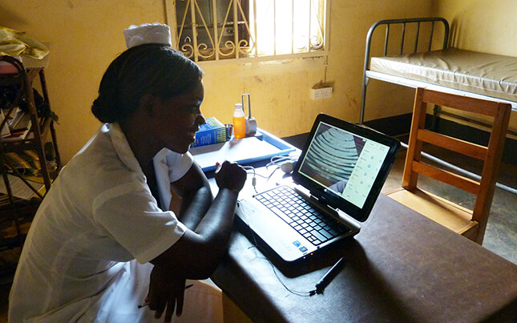

{{ page.title }}
{{ page.date }}
{{ page.intro }}
Maternal morality rates in sub-Saharan Africa are unacceptably high. Many factors contribute to this, including the near absence of ultrasound technology, which can potentially decrease deaths by identifying common pregnancy complications.
In 2010 Seattle radiologist Dr. Rob Nathan began donating GE portable ultrasound machines costing $20,000 to small, rural villages in Uganda. This price was unsustainable and the midwives had to train on these devices in Kampala, taking them away for long periods from their desperately needed work in village clinics. I, along with three others in the human-computer interaction and computer science departments at the University of Washington in Seattle, decided to help Dr. Rob Nathan design a low cost portable ultrasound device.
We were asked to build the device for under $5,000 and to create a simplified UI focused on three common prenatal complications:
1) Multiple gestations (twins)
2) placenta previa
3) breech presentation
The team first sent surveys to midwives working on the current GE machines, as well as visited local Seattle hospitals to learn about ultrasound technology. We then traveled to Uganda and conducted fieldwork in southern rural Uganda, meeting with midwives doing their best to deliver babies and keep mothers alive.
We learned that the midwives often worked 14 to 18 hours a day without reliable electricity. The donated GE machines were very complicated, and when minor technical issues occurred, the midwives put the device in a corner or closet without further use.
We built a simplified ultrasound application that utilized an Interson USB probe attached to a netbook. The most basic interactions were prioritized first, such as filling in the patient record and performing a simple scan. We iterated until radiologists, sonographers, and midwives both in the U.S. and Uganda verified that the device could successfully diagnose the three most common complications.
We were able to get the cost of the device to $3,500 using a modular off-the-shelf approach rather than an all-in-one system. We also added an integrated contextual help feature that helped supplement the limited sonography training received by the midwives.

I authored three academic papers along with team members Professor Beth Kolko, Dr. Rob Nathan, Alexis Hope, Pratik Prasad, and Wayne Gerard. Ultimately, our work broadened the conversation in the medical community about the needs for simplified lower cost medical technology.
For more about this work, watch this presentation from HCI professor and now Shift Labs CEO Beth Kolko: